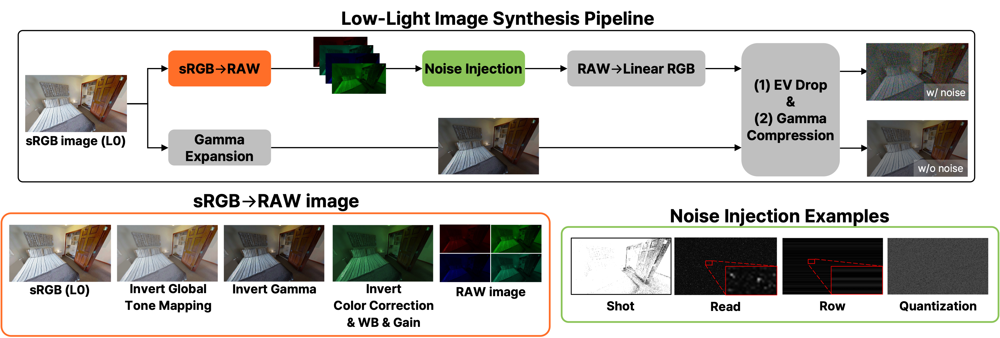
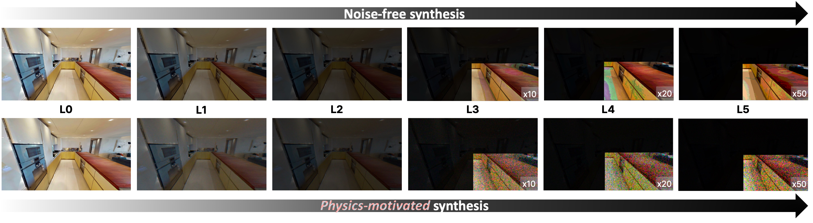
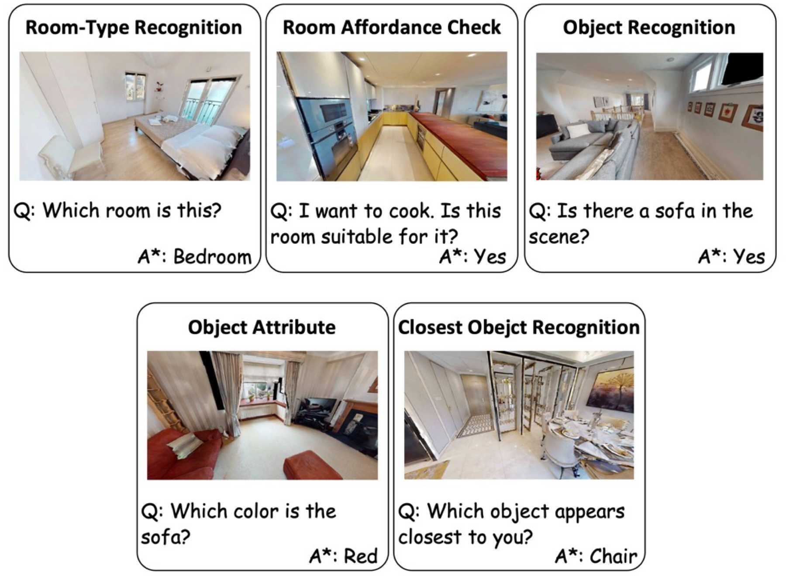
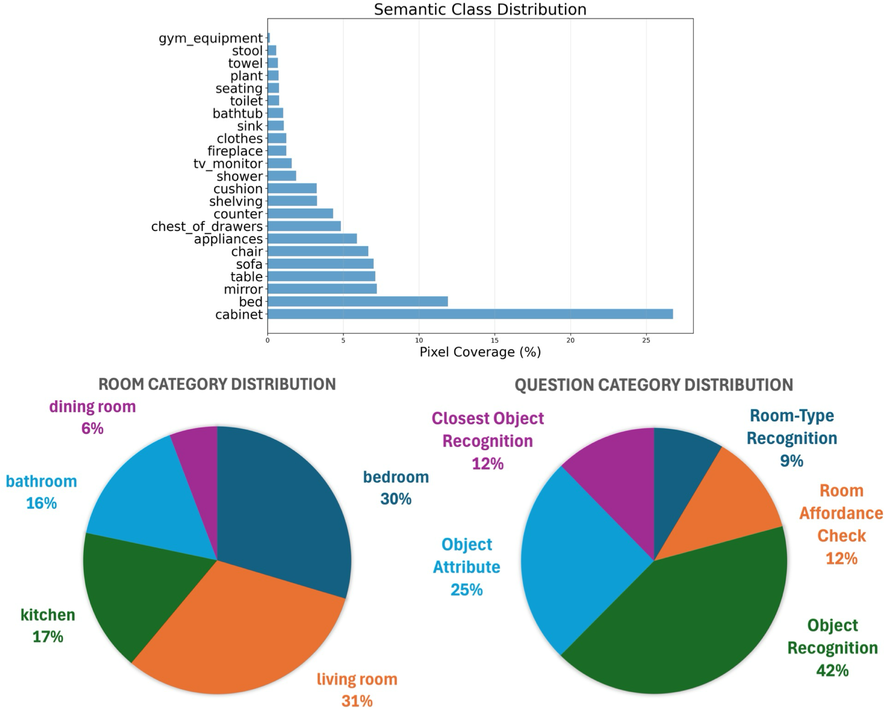
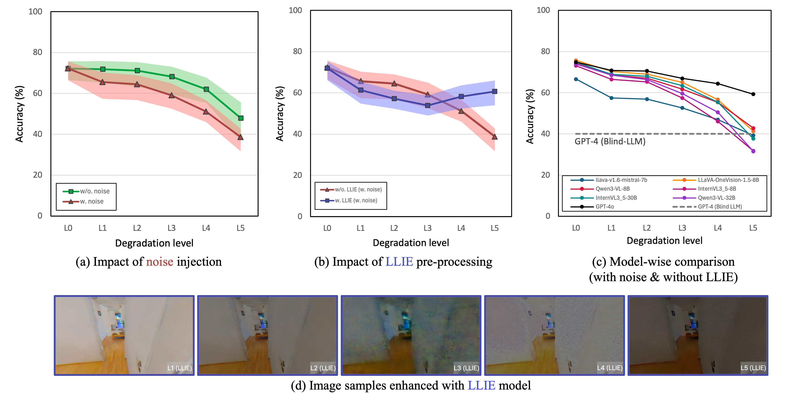
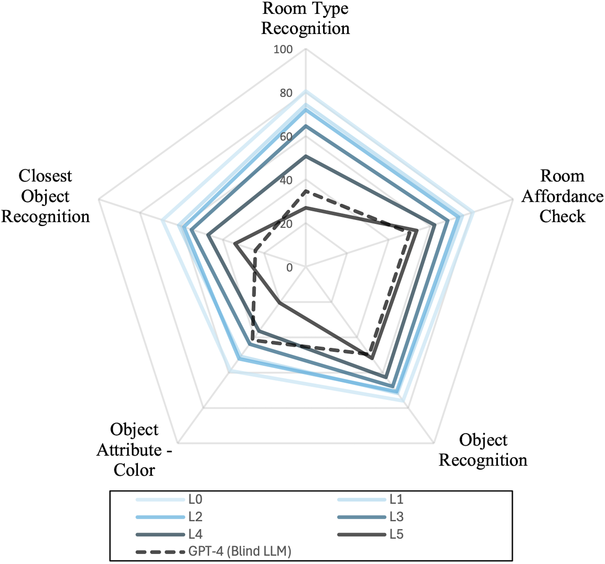
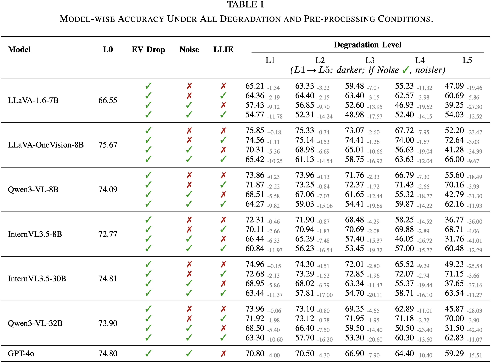

Vision Language Models (VLMs) are increasingly adopted as central reasoning modules for embodied agents. Existing benchmarks evaluate their capabilities under ideal, well-lit conditions, yet robust 24/7 operation demands performance under a wide range of visual degradations, including low-light conditions at night or in dark environments, a core necessity that has been largely overlooked.
To address this underexplored challenge, we present DarkQA, an open-source benchmark for evaluating perceptual primitives under multi-level low-light conditions in embodied scenarios. DarkQA evaluates single-view egocentric observations across controlled degradation levels, isolating low-light perceptual failures before they are entangled with complex embodied tasks.
The benchmark contains 9.4K deterministically generated and verifiable question-image pairs spanning five visual-primitive families. A key design feature of DarkQA is its physical fidelity: visual degradations are modeled in linear RAW space, simulating physics-based illumination drop and sensor noise followed by an ISP-inspired rendering pipeline; we further validate the synthesis against real paired low-light camera data. We evaluate representative VLMs and Low-Light Image Enhancement (LLIE) preprocessing methods.
Results show consistent VLM degradation under low illumination and sensor noise, while LLIE provides severity-dependent but unstable recovery. We demonstrate the utility of DarkQA by evaluating a wide range of state-of-the-art VLMs and Low-Light Image Enhancement (LLIE) models, and systematically reveal VLMs' limitations when operating under these challenging visual conditions. Our code and benchmark dataset will be released upon acceptance.
Our DarkEQA is designed to evaluate VLMs’ recognition of core perceptual primitives from a single image-question pair under controlled low-light conditions. We synthesize low-light images from the HM3D dataset. And we deterministically generate Question-Answer (QA) pairs.

We design a physics-based low-light synthesis pipeline. Specifically, across multiple degradation severities (L1–L5, increasing severity), we synthesize two paired low-light variants per original image: (i) A noise-free EV-drop variant and (ii) a physics-motivated variant with level-dependent sensor noise injection in the RAW domain, as in the above image. This design enables disentangling the respective impacts of illumination degradation and sensor noise on perceptual performance of VLMs.
Below is the synthesized low-light image examples across degradation levels L0–L5:

We build the dataset for evaluation upon a representative subset of 52 scenes from HM3D-Sem dataset. For each scene, we record a human-demonstrated navigation trajectory that systematically explores the environment to maximize spatial coverage. To generate the ground-truth QA pairs, we uniformly subsample the trajectory and select keyframes at a fixed time interval (e.g., one frame every 2,s), rendering their geometric and semantic modalities (e.g., RGB, depth, segmentation). We then use deterministic procedure to automatically generate QA pairs from the pre-computed per-keyframe statistics. For detailed procedures, please refer to Section 3-B of our paper.





@article{park2025darkqa,
author = {Park, Yohan and Ha, Hyunwoo and Jo, Wonjun and Oh, Tae-Hyun},
title = {DarkQA: Benchmarking Vision-Language Models on Visual-Primitive Question Answering in Low-Light Indoor Scenes},
journal = {arXiv preprint arXiv:2512.24985},
year = {2025},
}